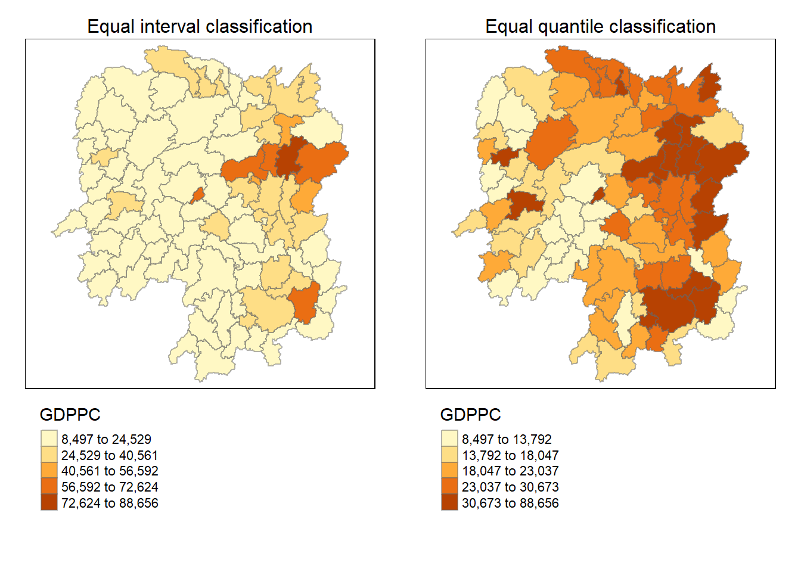
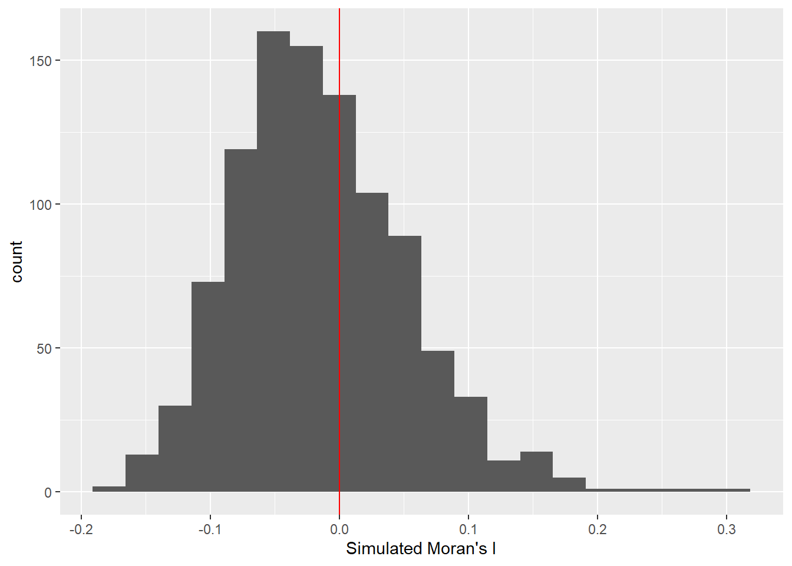

Code
pacman::p_load(sf, spdep, tmap, tidyverse)In this part, we’ll explore Global and Local Measures of Spatial Autocorrelation (GLSA) using the spdep package. Specifically, this 2B exercise will focus on Global Measures of Spatial Autocorrelation while the Local Spatial Autocorrelation will be explored in 2C exercise. The new learning objectives includes: - Compute Global Spatial Autocorrelation (GSA) statistics using spdep. - Plot Moran scatterplot. - Compute and plot spatial correlogram with spdep. - Visualize the analysis output using the tmap package.
Global measures of spatial autocorrelation provide a single summary statistic for an entire dataset, reflecting the overall degree of geographical clustering or dispersion. A commonly used global measure is Moran’s I, which helps to determine whether attribute values in a dataset are clustered together or spread apart. However, it doesn’t specify where these clusters or outliers are located on the map. Essentially, these measures give a general idea of spatial patterns across the whole study area but don’t provide detailed insights into local variations or specific areas summarized from: Wu and Kemp, 2019
In spatial policy, local governments aim for an even distribution of development within a region. This exercise focuses on applying spatial statistical methods to investigate if development is evenly distributed in a province. If not, the next questions are: Is there evidence of spatial clustering? And if yes, where are these clusters?
The case study and data being explored is the same as previous exercise (2A), which are GDP per capita (GDPPR) in Hunan Province , People’s Republic of China.
Ensure that spdep, sf, tmap, and tidyverse packages in R are installed. These packages are used for importing and handling geospatial data, wrangling attribute data, computing spatial weights, and visualizing the results. The code below checks for and installs missing packages:
pacman::p_load(sf, spdep, tmap, tidyverse)Similar to previous exercise, firstly the data needs to be imported, joined, and visualized to get the big picture.
#import geospatial data
hunan <- st_read(dsn = "../data/geospatial",
layer = "Hunan")Reading layer `Hunan' from data source `C:\ameernoor\ISSS624\data\geospatial' using driver `ESRI Shapefile'
Simple feature collection with 88 features and 7 fields
Geometry type: POLYGON
Dimension: XY
Bounding box: xmin: 108.7831 ymin: 24.6342 xmax: 114.2544 ymax: 30.12812
Geodetic CRS: WGS 84# import aspatial data
hunan2012 <- read_csv("../data/aspatial/Hunan_2012.csv")
# perform relational join
hunan <- left_join(hunan, hunan2012) %>%
select(1:4, 7, 15)
# visualize the data
equal <- tm_shape(hunan) +
tm_fill("GDPPC", n = 5, style = "equal") +
tm_borders(alpha = 0.5) +
tm_layout(main.title = "Equal interval classification", main.title.size = 1,
main.title.position = "center", legend.outside = TRUE,
legend.outside.position = "bottom")
quantile <- tm_shape(hunan) +
tm_fill("GDPPC", n = 5, style = "quantile") +
tm_borders(alpha = 0.5) +
tm_layout(main.title = "Equal quantile classification", main.title.size = 1,
main.title.position = "center", legend.outside = TRUE,
legend.outside.position = "bottom")
tmap_arrange(equal, quantile, asp=1, ncol=2)
In this section, we’ll explore how to calculate global spatial autocorrelation statistics and conduct a test for spatial randomness across the entire study area.
Before we can compute the global spatial autocorrelation statistics, we need to construct a spatial weights of the study area which use queen method in this example. After that weights needs to be assigned to each neighboring polygon, which use row-standardized weights matrix. Details on the concept was discussed in previous exercise.
wm_q <- poly2nb(hunan, queen=TRUE)
summary(wm_q)Neighbour list object:
Number of regions: 88
Number of nonzero links: 448
Percentage nonzero weights: 5.785124
Average number of links: 5.090909
Link number distribution:
1 2 3 4 5 6 7 8 9 11
2 2 12 16 24 14 11 4 2 1
2 least connected regions:
30 65 with 1 link
1 most connected region:
85 with 11 linksrswm_q <- nb2listw(wm_q, style="W", zero.policy = TRUE)
rswm_qCharacteristics of weights list object:
Neighbour list object:
Number of regions: 88
Number of nonzero links: 448
Percentage nonzero weights: 5.785124
Average number of links: 5.090909
Weights style: W
Weights constants summary:
n nn S0 S1 S2
W 88 7744 88 37.86334 365.9147style can take values “W”, “B”, “C”, “U”, “minmax” and “S”. B is the basic binary coding, W is row standardised (sums over all links to n), C is globally standardised (sums over all links to n), U is equal to C divided by the number of neighbours (sums over all links to unity), while S is the variance-stabilizing coding scheme proposed by Tiefelsdorf et al. 1999, p. 167-168 (sums over all links to n).
If zero policy is set to TRUE, weights vectors of zero length are inserted for regions without neighbour in the neighbours list. These will in turn generate lag values of zero, equivalent to the sum of products of the zero row t(rep(0, length=length(neighbours))) %*% x, for arbitrary numerical vector x of length length(neighbours). The spatially lagged value of x for the zero-neighbour region will then be zero, which may (or may not) be a sensible choice.
Now, let’s perform a test for Moran’s I statistic, which assesses spatial autocorrelation. The test is performed using moran.test() of spdep.
moran.test(hunan$GDPPC, listw=rswm_q, zero.policy = TRUE, na.action=na.omit)
Moran I test under randomisation
data: hunan$GDPPC
weights: rswm_q
Moran I statistic standard deviate = 4.7351, p-value = 1.095e-06
alternative hypothesis: greater
sample estimates:
Moran I statistic Expectation Variance
0.300749970 -0.011494253 0.004348351 The statistical output indicates a Moran’s I statistic of 0.30, which is a measure of spatial autocorrelation. The standard deviate is 4.7351, leading to a very low p-value of 1.095e-06. The alternative hypothesis suggests a “greater” spatial autocorrelation. Based on the output, we can conclude that there is a strong and significant positive spatial autocorrelation in the GDPPC of Hunan county. This means that counties with similar GDPPC tend to be close to each other on the map. In other words, there is a spatial pattern of high-income and low-income counties in Hunan.
Next, perform a permutation test for Moran’s I using the moran.mc() function of spdep. This involves running 1000 simulations.
set.seed(1234)
bperm= moran.mc(hunan$GDPPC,
listw=rswm_q,
nsim=999,
zero.policy = TRUE,
na.action=na.omit)
bperm
Monte-Carlo simulation of Moran I
data: hunan$GDPPC
weights: rswm_q
number of simulations + 1: 1000
statistic = 0.30075, observed rank = 1000, p-value = 0.001
alternative hypothesis: greaterThe associated p-value is 0.001, indicating statistical significance. The alternative hypothesis of “greater” spatial autocorrelation aligns with the initial Moran’s I test. This Monte Carlo simulation provides additional evidence supporting the presence of positive spatial autocorrelation in the GDP per capita values across the study area.
To gain more insights, we plot the distribution of simulated Moran’s I values using a histogram. the code use hist() and abline() of R Graphics are used.
mean(bperm$res[1:999])[1] -0.01504572var(bperm$res[1:999])[1] 0.004371574summary(bperm$res[1:999]) Min. 1st Qu. Median Mean 3rd Qu. Max.
-0.18339 -0.06168 -0.02125 -0.01505 0.02611 0.27593 hist(bperm$res,
freq=TRUE,
breaks=20,
xlab="Simulated Moran's I")
abline(v=0,
col="red") 
The histogram indicates that the simulated Moran’s I values follow a normal distribution with it’s bell-shaped characteristic
the next code chunk perform similar task, but using ggplot package
# Extract the res column and convert it to a data frame
res_df <- data.frame(res = bperm$res)
# Plot the histogram using ggplot2
ggplot(res_df, aes(x = res)) +
geom_histogram(bins = 20) +
geom_vline(xintercept = 0, color = "red") +
xlab("Simulated Moran's I")
In this part, we explore Geary’s C statistics to understand spatial autocorrelation in our data. Geary’s C test helps us determine if there’s any pattern of similarity or dissimilarity between neighboring areas.
The provided R code conducts Geary’s C test using the geary.test() function from the spdep package. This test essentially examines if the values in one region are significantly different from the values in neighboring regions.
geary.test(hunan$GDPPC, listw=rswm_q)
Geary C test under randomisation
data: hunan$GDPPC
weights: rswm_q
Geary C statistic standard deviate = 3.6108, p-value = 0.0001526
alternative hypothesis: Expectation greater than statistic
sample estimates:
Geary C statistic Expectation Variance
0.6907223 1.0000000 0.0073364 The Geary’s C test results in a significant p-value (less than the typical significance level of 0.05), indicating that the spatial autocorrelation observed in the data is unlikely due to random chance. The Geary C statistic (0.6907) being less than the expectation (1.0000) suggests a pattern of dissimilarity between neighboring regions. Additionally, the variance (0.0073) provides information about the variability of this dissimilarity. Overall, these results suggest a non-random spatial pattern of dissimilarity in the distribution of the GDP per capita in the study area.
This code snippet uses Monte Carlo simulation to test Geary’s C statistic for spatial autocorrelation, by using geary.mc() of spdep. By comparing the observed statistic to a distribution of simulated values, it helps us assess whether the observed pattern is statistically significant.
set.seed(1234)
bperm=geary.mc(hunan$GDPPC,
listw=rswm_q,
nsim=999)
bperm
Monte-Carlo simulation of Geary C
data: hunan$GDPPC
weights: rswm_q
number of simulations + 1: 1000
statistic = 0.69072, observed rank = 1, p-value = 0.001
alternative hypothesis: greaterThe observed Geary’s C statistic is 0.69072, and it ranks first among the simulated values, with a p-value of 0.001. This suggests that there is a strong spatial autocorrelation in the distribution of GDPPC values, indicating a pattern of either spatial similarity or dissimilarity among neighboring regions. The alternative hypothesis of greater spatial autocorrelation is supported by the low p-value, signifying that the observed spatial pattern is unlikely to have occurred by random chance alone..
The next step involves creating a histogram to understand the distribution of simulated values and to see where our observed value falls on the spectrum.
mean(bperm$res[1:999])[1] 1.004402var(bperm$res[1:999])[1] 0.007436493summary(bperm$res[1:999]) Min. 1st Qu. Median Mean 3rd Qu. Max.
0.7142 0.9502 1.0052 1.0044 1.0595 1.2722 hist(bperm$res, freq=TRUE, breaks=20, xlab="Simulated Geary c")
abline(v=1, col="red") 
Similar to previous result, this histogram also indicates that the simulated Geary c values follow a normal distribution with it’s bell-shaped characteristic
Spatial correlograms offer insights into spatial autocorrelation patterns by plotting autocorrelation indices against increasing distances. They are useful for exploratory analysis.
In this part, the sp.correlogram() of spdep package computes a Moran’s I correlogram for GDPPC. The resulting plot illustrates how Moran’s I values change as the distance between regions increases. In the code chunk below,
MI_corr <- sp.correlogram(wm_q,
hunan$GDPPC,
order=6,
method="I",
style="W")
plot(MI_corr)
It’s important to inspect the full analysis report, which can be printed using the following code:
print(MI_corr)Spatial correlogram for hunan$GDPPC
method: Moran's I
estimate expectation variance standard deviate Pr(I) two sided
1 (88) 0.3007500 -0.0114943 0.0043484 4.7351 2.189e-06 ***
2 (88) 0.2060084 -0.0114943 0.0020962 4.7505 2.029e-06 ***
3 (88) 0.0668273 -0.0114943 0.0014602 2.0496 0.040400 *
4 (88) 0.0299470 -0.0114943 0.0011717 1.2107 0.226015
5 (88) -0.1530471 -0.0114943 0.0012440 -4.0134 5.984e-05 ***
6 (88) -0.1187070 -0.0114943 0.0016791 -2.6164 0.008886 **
---
Signif. codes: 0 '***' 0.001 '**' 0.01 '*' 0.05 '.' 0.1 ' ' 1The spatial correlogram for hunan$GDPPC using Moran’s I method reveals that as the distance between regions increases, there is a statistically significant spatial autocorrelation. The estimate of Moran’s I indicates positive autocorrelation at various lag distances (1 to 6). The p-values associated with each lag distance are highly significant (indicated by the ***), suggesting that the observed spatial pattern is not due to random chance. This implies that regions with similar GDPPC values tend to cluster together, providing evidence for a non-random spatial distribution of economic development in Hunan province.
Similarly, we calculate a Geary’s C correlogram to understand how the spatial autocorrelation, measured by Geary’s C, changes with increasing distances.
GC_corr <- sp.correlogram(wm_q,
hunan$GDPPC,
order=6,
method="C",
style="W")
plot(GC_corr)
Print the analysis report for a more detailed understanding:
print(GC_corr)Spatial correlogram for hunan$GDPPC
method: Geary's C
estimate expectation variance standard deviate Pr(I) two sided
1 (88) 0.6907223 1.0000000 0.0073364 -3.6108 0.0003052 ***
2 (88) 0.7630197 1.0000000 0.0049126 -3.3811 0.0007220 ***
3 (88) 0.9397299 1.0000000 0.0049005 -0.8610 0.3892612
4 (88) 1.0098462 1.0000000 0.0039631 0.1564 0.8757128
5 (88) 1.2008204 1.0000000 0.0035568 3.3673 0.0007592 ***
6 (88) 1.0773386 1.0000000 0.0058042 1.0151 0.3100407
---
Signif. codes: 0 '***' 0.001 '**' 0.01 '*' 0.05 '.' 0.1 ' ' 1The Geary’s C correlogram for the GDPPC in Hunan Province indicates varying levels of spatial autocorrelation at different distance lags. The estimates at the first and second lags (distances) are significantly lower than the expected value, suggesting a pattern of positive spatial autocorrelation, meaning similar values tend to cluster together. However, as the distance increases, the autocorrelation becomes non-significant (lag 3), indicating a decrease in similarity between neighboring regions. Subsequently, at lags 4, 5, and 6, there is a mix of significant and non-significant autocorrelation, suggesting a complex spatial pattern with pockets of both similarity and dissimilarity at these distances.